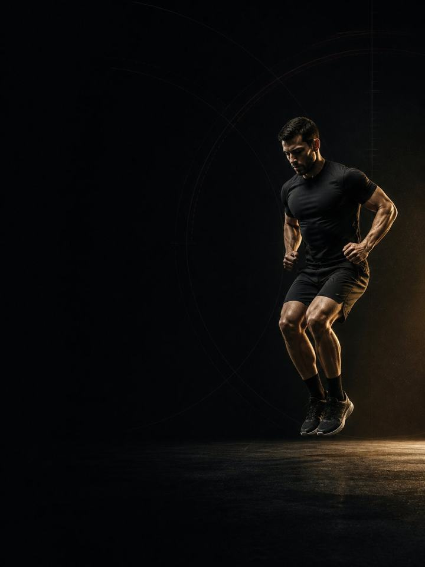

التحمل · البناء
القوة تمنحك القدرة على إنتاج القوة. والصلابة تعيدها إليك مجانًا.
- مناسب لـالعدّائين وراكبي الدراجات ولاعبي الترايثلون
- أيام التدريب2 في النادي أسبوعيًا، حول تدريبك
- مدة الجلسة41–43 دقيقة
- المعداتنادٍ متكامل فيه بار وأجهزة ودرجة
- الصيغةملف PDF للهاتف، وكل تمرين مرتبط بفيديو توضيحي
لمن هذا البرنامج
العدّاؤون وراكبو الدراجات ولاعبو الترايثلون الذين أنهوا كتلة أساس، ويتّجهون إلى مرحلة التدريب الثقيل قبل موسم السباقات.
علّمت كتلة الأساس الأنسجة أن تتحمّل الحمل. وفي هذه الكتلة تصبح قويًا. فيها أثقل رفع في سنتك، ويأتي الآن لأن السباقات ما زالت بعيدة. وتضيف أيضًا عنصرًا جديدًا: البلايومترك منخفضة المدى، أي قفزات البوغو، وتمارين صلابة الكاحل، والملامسات القصيرة للأرض. تبدو تافهة، ولا تكاد تكلّف شيئًا من التعافي، ومع تمارين القوة الثقيلة على مدى 8–12 أسبوعًا حسّنت اقتصاد الجري لدى العدّائين المدرَّبين. القوة تمنحك القدرة على إنتاج القوة، والصلابة تعيد تلك القوة إليك في كل ملامسة للأرض. ما زالت جلستين في الأسبوع، وما زالت أقصر مما تتوقّع، وما زالت مبنية حول التدريب الذي يهمّ فعلًا.
موقعه في السنة: الكتلة 2 من 4. الأساس، والبناء، والمنافسة، والاستشفاء. طبّقه في مرحلة التدريب الثقيل قبل موسم السباقات، حين تكون لائقًا لكنك لم تبدأ الصقل بعد.
أسبوعك
ما زالا يومين في النادي، لا ثلاثة. يصبح الرفع أثقل، لا أطول.
| الأحد | الاثنين | الثلاثاء | الأربعاء | الخميس | الجمعة | السبت |
|---|---|---|---|---|---|---|
| اليوم 1 | تدريب | اليوم 2 | تدريب | تدريب | راحة | تدريب طويل |
أسبوع التدريب الثقيل: انقل اليوم 2 إلى وقت لاحق، ليصبح الأسبوع: اليوم 1، تدريب، تدريب، راحة، اليوم 2، راحة، تدريب طويل.
كل جلسة تسير بالطريقة نفسها:
- الإحماء، 8–10 دقائق. التسلسل نفسه في كل مرة، مع بضع قفزات بوغو لإيقاظ الكاحلين.
- البلايومترك، 5 دقائق. قصيرة ونابضة وأنت في كامل نشاطك. قبل العمل الثقيل، لا بعده أبدًا.
- الرفعات الرئيسية، 20 دقيقة. رفعتان أو ثلاث رفعات ثقيلة براحة طويلة. هذا قلب الكتلة.
- عمل الأوتار، 8 دقائق. رفع السمانة، والنوردي، ورفع مقدّمة القدم. في النهاية، ولا يُحذف أبدًا.
تنتقل البلايومترك إلى بداية الجلسة في هذه الكتلة لأن تمارين الصلابة لا تنجح إلا وأنت في كامل نشاطك. فالقفزات المتعبة مجرد قفزات. وقتك ضيق؟ احذف مجموعة من الرفعات الرئيسية، لا من تمارين السمانة.
كيف تتقدّم الأسابيع الـ12
أمران في النادي يحسّنان أداء التحمّل، وهما ليسا الشيء نفسه. القوة القصوى تخفض النسبة التي تتطلّبها كل خطوة أو ضربة دوّاسة من قدرتك. أما صلابة الأوتار فشيء منفصل: وتر أكيلس الأكثر صلابة يعيد قدرًا أكبر من الطاقة التي تضعها في الأرض، فتستهلك السرعة نفسها أكسجينًا أقل. والصلابة تستجيب للتحميل القصير السريع منخفض المدى، أي القفزات بانثناء شبه معدوم للركبة، لا للرفع الثقيل البطيء. ولهذا تجمع هذه الكتلة الاثنين. وتبقى جرعة البلايومترك صغيرة عن قصد، لأن التكيّف يأتي من جودة كل ملامسة، لا من عدد القفزات.
ثلاث مراحل، مدة كل منها أربعة أسابيع. يبلغ الحمل ذروته في منتصف الكتلة، ثم تتولّى سرعة البار والجودة الارتدادية القيادة. وينخفض حجم النادي على امتداد الكتلة عن قصد، لأن حجم جريك أو ركوبك الدراجة يرتفع في الوقت نفسه.
| الأسابيع 1–4 | الأسابيع 5–8 | الأسابيع 9–12 | |
|---|---|---|---|
| المرحلة | القوة القصوى | صلابة الأوتار | القوة الارتدادية |
| الهدف | بناء القوة القصوى برفع أوزان ثقيلة بتكرارات قليلة | زيادة صلابة السمانة ووتر أكيلس | تحويل القوة والصلابة إلى قوة ارتدادية واقتصاد في الجري |
| كيف يبدو | أثقل رفع في السنة، بمجموعات من 4–5 تكرارات. تبدأ البلايومترك بجرعة ضئيلة | يبقى الحمل مرتفعًا بينما يتزايد القفز. وتصبح الملامسات أقصر وأكثر حدّة | أقصر جلسات السنة، نحو 41–43 دقيقة. ثقيل، وسريع، ثم المغادرة |
| المجموعات الفعلية أسبوعيًا | 39 | 39 | 31 |
| متوسط الجهد | جهد 7.9/10، والتكرارات المتبقية نحو 2 | جهد 7.8/10، والتكرارات المتبقية نحو 2 | جهد 7.9/10، والتكرارات المتبقية نحو 2 |
| مرات الهبوط أسبوعيًا | 95 | 141 | 141 |
المرحلة في لمحة
المجموعات التدريبية أسبوعيًا حسب ما تدرّبه. الخط المتقطع هو مستوى الجهد.
موقع هذه المرحلة في السنة التدريبية
نفّذ المراحل الأربع بالترتيب لتكتمل سنة تدريبية كاملة.
الجهد (RPE) تقييم من 10 لمدى صعوبة المجموعة. والتكرارات المتبقية هي عدد التكرارات الجيدة الإضافية التي كنت تستطيع أداءها، فعبارة «التكرارات المتبقية نحو 2» تعني أنه يتبقى في الخزان نحو تكرارين.
أسابيع التخفيف: الأسبوعان 6 و12 يخفّضان المجموعات إلى النصف ويحذفان البلايومترك، وتعيد الاختبار وأنت مرتاح. خذ أسبوع التخفيف مبكرًا إذا ارتفع حمل تدريبك فجأة.
القواعد التي تجعله ينجح
- هذه أثقل كتلة في سنتك. مجموعات من ثلاثة إلى خمسة تكرارات، وراحة طويلة، وحمل حقيقي. السباقات بعيدة، ولا نافذة أفضل من هذه لتصبح قويًا.
- البلايومترك أولًا، أو لا تؤدّها إطلاقًا. الصلابة تتكيّف مع ملامسات سريعة وجيدة وأنت في كامل نشاطك. والقفزات المؤدّاة وأنت متعب في نهاية الجلسة مجرد تعب مع ارتطام إضافي.
- جرعات صغيرة من القفز، تُؤدّى جيدًا. من عشر إلى خمس عشرة ثانية في كل مرة. هبوط هادئ، وكاحلان صلبان، وانثناء شبه معدوم للركبة. الهبوط الصاخب يعني أنك تنهار، وأن المجموعة انتهت.
- ينخفض الحجم كلما ارتفع الحمل. يرتفع حجم تدريبك خلال هذه الكتلة، فيتقلّص النادي ليفسح له المجال. جلسات المرحلة 3 نحو 41–43 دقيقة.
- لن يجعلك ضخمًا. التدريب الثقيل بتكرارات قليلة يبني القوة وصلابة الأوتار بزيادة ضئيلة جدًا في الحجم. وإذا ارتفع وزن الجسم، فالسبب التغذية لا البار.
- احسب مرات الهبوط، لا المجموعات فقط. كل قفزة، وحجلة، ووثبة، وهبوط من ارتفاع هو هبوط تدفع أوتارك ثمنه، بما في ذلك قفزات الإحماء. أبقِ الأسبوع تحت نحو 150 هبوطًا في هذه الكتلة، مع احتساب تدريبك إضافةً إليه.
- احذف مجموعة قفز في الأسابيع الثقيلة. إذا كان الأسبوع يحمل أصلًا جلسات مضمار أو مرتفعات صعبة، فاحذف مجموعة واحدة من كل تمرين قفز. عدد مرات الهبوط حدّ أعلى، لا هدف.
المصطلحات
- الكتلة التدريبية: 12 أسبوعًا. هذا البرنامج. تطوّر الكتلة الواحدة مجموعة واحدة من الصفات إلى مستوى محدّد.
- المرحلة (الدورة المتوسطة): 4 أسابيع. تستهدف كل منها صفة واحدة. وأربعة أسابيع اختيار لا قاعدة، فالمدة تتبع الهدف.
- الأسبوع التدريبي (الدورة الصغرى): حيث يرتفع الجهد، وتُضاف المجموعات، ويقع أسبوع التخفيف.
- السنة التدريبية (الدورة الكبرى): أربع كتل بالترتيب (الأساس، والبناء، والمنافسة، والاستشفاء)، نحو 48 أسبوعًا.
كيف تقيس تقدّمك
الأسبوعان 6 و12 أسبوعا إعادة اختبار، تُجريها وأنت مرتاح في نهاية كل أسبوع تخفيف. ويبدأ كل أسبوع أيضًا بفحص مدته 90 ثانية: ثلاث وثبات طويلة من الثبات في بداية اليوم 1، وتحتفظ بأفضلها. إذا كانت النتيجة أقل من متوسطك المتحرّك بأكثر من 10%، فخفّف ذلك اليوم: تُحذف تمارين القدرة الانفجارية، وتخسر كل رفعة مجموعة واحدة، أيًا كان المكتوب في الصفحة.
شكل التقدّم الجيد
- الأسابيع 1–4: يصبح البار ثقيلًا، وتتألّم السمانة من القفز. وكلاهما يهدأ.
- الأسابيع 5–8: ترتفع أرقام القوة هنا أسرع من أي وقت، وهنا عادةً تبدأ السرعة نفسها تبدو أقل كلفة بالجهد نفسه.
- الأسابيع 9–12: الجلسات هي الأقصر في السنة، والأحمال هي الأعلى.
ينبغي أن يبقى وزن الجسم ثابتًا تقريبًا طوال الوقت. هذه الكتلة تبني القوة والصلابة، لا الحجم.
احترم الأسبوع
احسب كل شيء: السباقات، وجلسات التدريب، والنادي، والنوم. القفزات المفاجئة في حمل التدريب الأسبوعي هي أوثق مؤشر على الإصابة في الرياضة غير الاحترافية. في أسبوع تدريب ثقيل، احذف جلسة نادٍ أو اختصر تمارين القدرة الانفجارية، لكن لا تختصر التدريب والتعافي معًا أبدًا. احمِ 7–9 ساعات من النوم، فهو أقوى أداة متاحة للأداء، وأرخصها.
الأدلة العلمية
كل برنامج في المكتبة مبني على أبحاث منشورة، وقوة تلك الأبحاث مذكورة صراحةً لا ضمنًا. وحيث تكون الأدلة محدودة، تقول الصفحة ذلك.
| النتيجة | المصدر | ما لا تُظهره |
|---|---|---|
| تدريب القوة يخفض الإصابات الرياضية إلى أقل من ثلث معدلها في المجموعة الضابطة. أما الإطالة فلا تخفضها. | Lauersen, Bertelsen & Andersen, Br J Sports Med 2014. Meta-analysis of 25 RCTs, 26,610 participants. PMID 24100287 | نسبة الخطر 0.32 لتدريب القوة و0.96 للإطالة. تفاوتت التجارب كثيرًا، ولم تكن الجرعة موحّدة. |
| البرامج التي تتضمّن تمرين نورديك للعضلات الخلفية للفخذ تخفض إصابات العضلات الخلفية للفخذ إلى النصف تقريبًا. | van Dyk, Behan & Whiteley, Br J Sports Med 2019. Meta-analysis, 15 studies, 8,459 athletes. PMID 30808663 | نسبة الخطر 0.49. يصغر الأثر لكنه يبقى قائمًا عند استبعاد الدراسات الثماني عالية خطر التحيّز (0.55). وهي تقيس البرامج التي تتضمّن التمرين، لا التمرين وحده. |
| لدى عدّائي المسافات المتوسطة والطويلة المدرَّبين، كان لتدريب القوة مع البلايومترك، مرتين إلى ثلاث مرات أسبوعيًا لمدة 8–12 أسبوعًا، أثر إيجابي كبير في اقتصاد الجري. | Balsalobre-Fernández, Santos-Concejero & Grivas, J Strength Cond Res 2016. Meta-analysis of 5 controlled trials, 93 highly trained runners. PMID 26694507 | الفرق المعياري بين المتوسطات −1.42. ولا تُظهر الأثر لدى عدّائي الهواية، ولا لدى راكبي الدراجات والسبّاحين. |
| أي وصفة تدريب معقولة أفضل من عدم التدريب. الأحمال الأثقل تحتل المرتبة الأعلى للقوة، والمجموعات المتعددة تحتل المرتبة الأعلى لحجم العضلات. | Currier et al., Br J Sports Med 2023. Network meta-analysis, 178 strength and 119 hypertrophy studies. PMID 37414459 | كانت الفروق بين الوصفات صغيرة، وكلها نجحت. |
ماذا بعد
بعد 12 أسبوعًا:
- الكتلة التالية: التحمل · المنافسة
- منطقة واحدة تحتاج إلى عمل: السلسلة التصحيحية
قبل الشراء: احصل على موافقة طبية أولًا إذا
- كان لديك ألم في الصدر، أو ضيق تنفس غير معتاد، أو خفقان، أو دوخة أثناء المجهود.
- كان لديك ضغط دم مرتفع غير منضبط، أو مرض قلبي معروف، أو خضعت لعملية جراحية مؤخرًا.
- كنتِ حاملًا أو بعد الولادة بفترة قصيرة. احصلي على موافقة وبرنامج مخصص أولًا.
- كان لديك ألم حاد في مفصل واحد لا يهدأ. ابدأ ببرنامج أكسس التصحيحي المناسب.
هذا البرنامج إرشاد عام للياقة البدنية، ولا يغني عن التقييم الطبي.